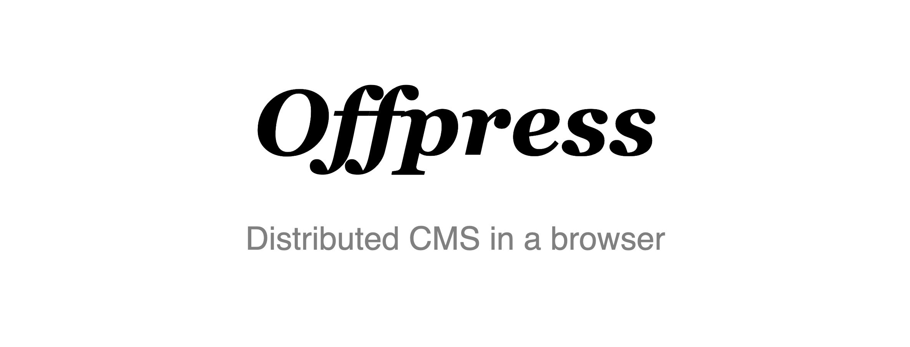
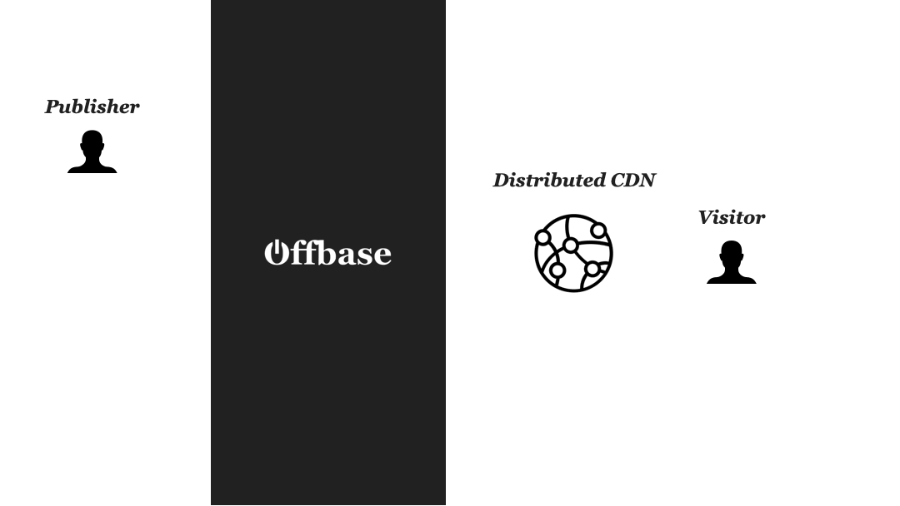
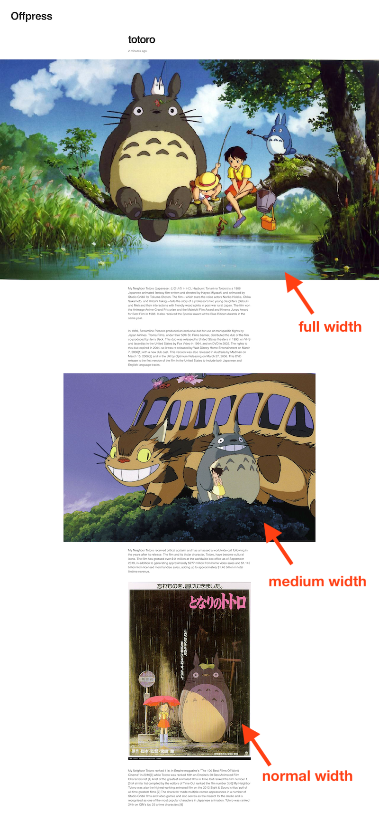
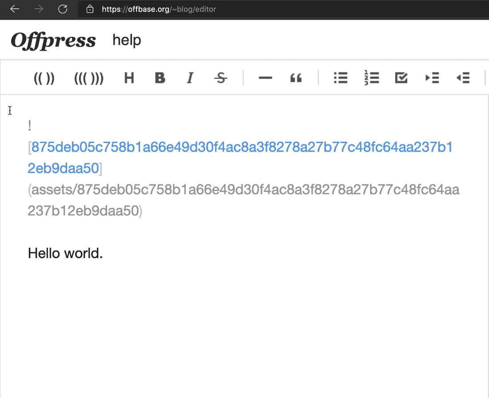
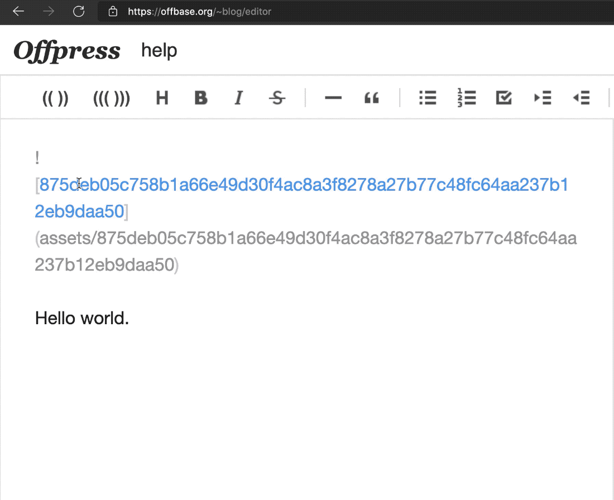
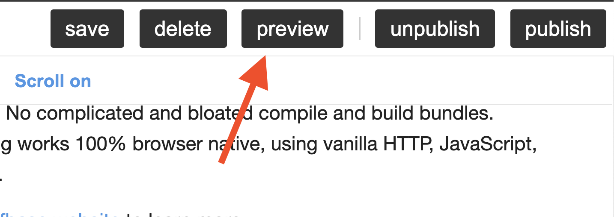
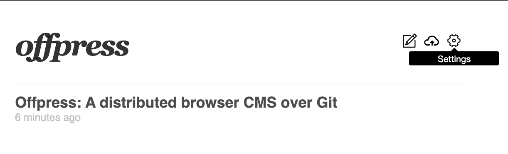
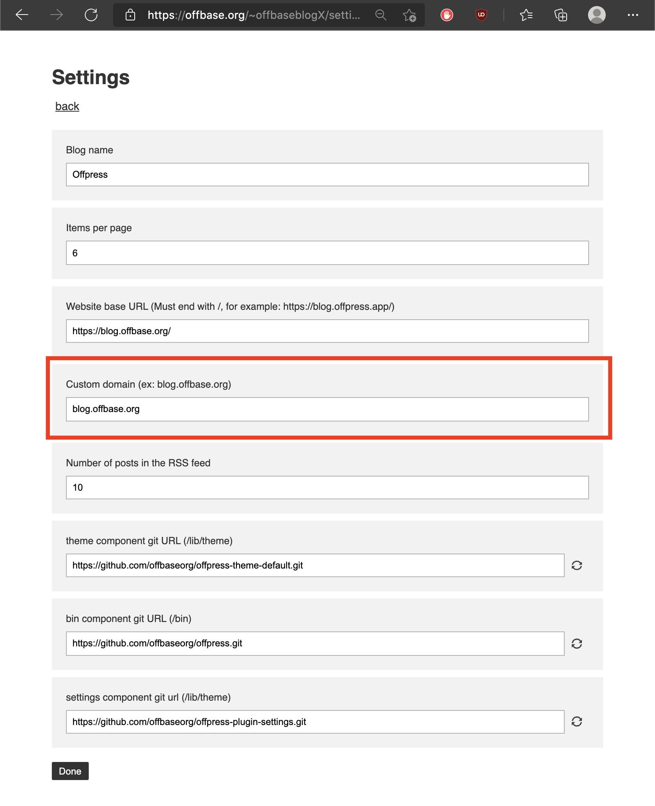
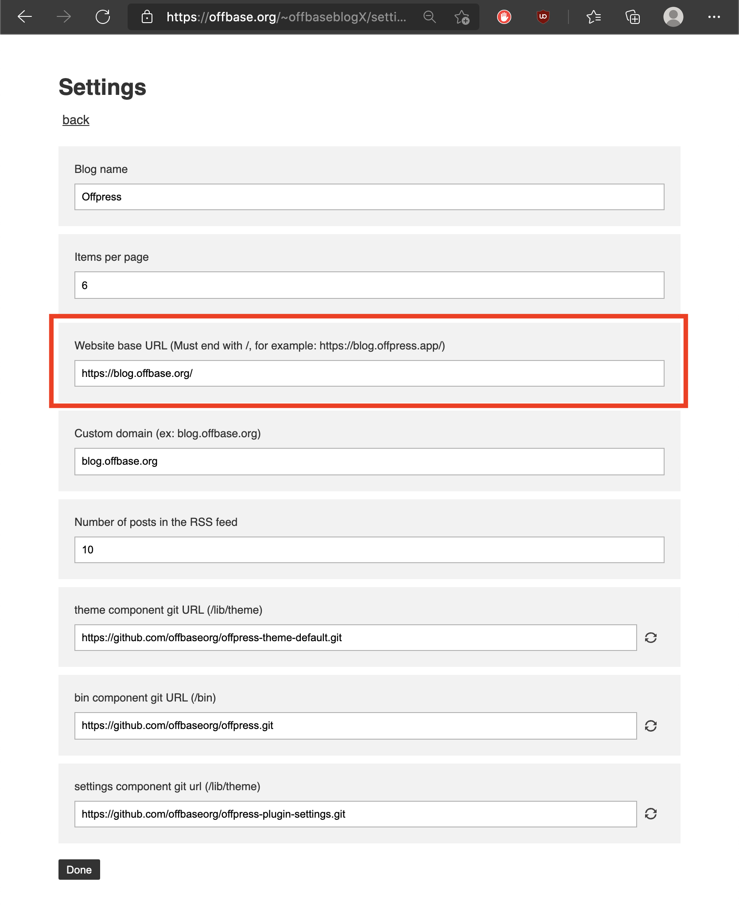

Offpress is a self-contained, distributed blogging engine powered by git, that works directly in your browser. You can try it here: https://offpress.app
This blog is also powered by Offpress.
Using Offpress should be as easy as using any other blogging service, with one difference: Offpress does not store anything. Instead it lets you easily store and serve your site from your own Git repository.
Traditional CMS's store content on the CMS service provider's server, which means all requests need to go through the CMS server host's centralized server farm:
On the other hand, Offpress lets you store your content in your git repository, and serve your content by pushing the git to a CDN provider. This means you get to own your content without having to run a database server, and the content gets served directly from the CDNs so it's much cheaper, more efficient, and faster than a database backed CMS's:

If you're aware of static site generators, this part is actually the same for all static site generators. The main value proposition of Offpress is that it makes it significantly easier. Previously it was difficult to do this entirely in a browser without relying on a 3rd party. Also the learning curve was high and non-developers couldn't take advantage of this approach.
Offbase takes care of the integration part seamlessly so you don't have to do anything. All you need is a GitHub account.
Currently Offbase only supports pushing to GitHub but will support other git repositories as the system matures.
How does it all work?
Here's a video where you can quickly understand how this thing works (Note that Offbase is the engine that powers Offpress, and in this video I simply mention Offpress as "blogging package"):
If you're familar with static site generators, Offpress is essentially a static site generator in a browser. Being able to edit, build, and deploy static sites directly inside a browser is a gamechanger because it solves the one problem traditional static site generators had: Only developers can use them because of its complexity. Unless you are a developer, you can't easily use static site generators because the setup process and understanding the structure is not so easy. Also, the deployment step is definitely not easy for developers since you have to do it all in the terminal.
Of course, there are some services that provide a better UX on top of the traditional static site generators, but all of these services operate a build server behind the scenes, which means at some point you will need to start paying them since that's their business model.
Offpress is a blogging engine that has zero learning curve AND you can own forever, without getting locked into a 3rd party, so you can use the system for free forever.
FAQ
Let me answer some potential questions:
1. How can it work without a server?
Offpress is powered by Offbase, which lets you build web apps that replace servers with Git, letting you build distributed web apps. Offbase itself is powered by many technologies, including:
- Isomorphic Git: Used to take care of all the git operations in the browser and implement a virtual file system.
- Service Worker: Used to implement a self contained backend that runs purely inside the browser, locally.
- Native ES Modules: Offbase is powered by vanila JavaScript and native ES modules. No complicated and bloated compile and build bundles. Everything works 100% browser native, using vanilla HTTP, JavaScript, and CSS.
Check out Offbase website to learn more.
2. Where is my site hosted?
Offpress by default uses GitHub pages (gotta start from somewhere!), so currently you can push to a GitHub repository to publish your blog. If you are not familiar with GitHub pages, it's a CDN service that GitHub provides for FREE, where you can simply push a static site HTML and it will serve the site for you.
Your site will be available at: https://<GITHUB USERNAME>.github.io/<REPO NAME>/blog/.
For example, if your repository name is https://github.com/skogard/myblog, the website will be published at https://skogard.github.io/myblog/blog/
3. Can I host my site somewhere else?
There are vaious CDN services that synchronize automatically with GitHub and host your site for you. Since these services are dedicated to static site web hosting and serverless architecture, they tend to have a lot of great features and most importantly, the site refreshes instantly (Unlike GitHub pages which takes up to a minute or so to refresh whenever you publish).
Here are some of the CDN services I recommend:
- Vercel
- Netlify
Couldn't include Cloudflare because it seems to be in beta.
4. How to do full width images and medium width images?
Offpress supports three width types for images: full, medium, and normal:

To turn an image into a medium width image, just select an image markup block and click the (( )) toolbar button. You'll see that it inserts a <div class='medium'></div> wrapper around the image block.

To turn an image into a full width image, select the image markup and click the ((( ))) button, you'll see that it inserts a <div class='full'></div> wrapper around the selected block:

5. Can I see a preview before publishing?
Yes! In fact this is one of the cool things about Offpress. Every time you save a post, the markdown gets compiled into the final HTML version, and you can see the HTML by clicking the "preview" button at the top right corner:

This is powered by a technology called Service Worker, which powers Offpress. This lets you view HTML preview without having to run a server because Offpress--powered by Offbase--creates a self-contained virtual server environment directly in the browser. So when you press the preview button you will see the web page open in an offbase.org domain URL, but it's actually being served from your local browser!
6. Why do I do everything on Offbase.org instead of Offpress.app?
Offpress is powered by Offbase. When you build an application powered by Offbase, it gets downloaded to localstorage at Offbase.org. (This is necessary because of the technology called Service Worker, which Offbase uses, but this is a story for another day).
Basically, think of the offbase.org domain as your local computer where you download applications. Offpress is one of them. So you always go to offbase.org to use any offbase app. Here's a good analogy:
Windows : Powerpoint = Offbase : Offpress
7. Where can I find an Offpress documentation?
I will discuss below, but for now there is no documentation for Offpress. I wanted to release the Offpress application itself as a standalone first.
But it's coming. Soon.
That said, everything is already completely open, so those of you who are adventurous can actually build anything you want, including something like Offpress. Check out the Offpress source code. Just a hint:
- See https://github.com/offbaseorg/offpress for the actual app logic
- See https://github.com/offbaseorg/offpress-bootstrap for the bootstrap config. THIS is the file you download, which in turn triggers downloads of all the dependencies.
8. How do I support custom domains?
You can do this in the settings page.
Go to the main page of your app and click the gear button at the top right corner (You'll see the "settings" tooltip when you hover over):

Then add your custom domain in the custom domain field:

9. How do I support RSS feed?
Go to the settings page and fill out the "website base URL" field. Make sure to end the URL with /, and include the full URL including the https or http part.

10. How to customize the blog name?
You can do this inside the settings page too.
Next Steps
This Offpress release is the first step. For starters, Offpress itself is very early so there's lots of room for optimization. Also I have many things on the to-do list including:
- Release Offpress documentation: So you can build your own themes, build your own plugins, and even build your own custom CMS fork!
- Release Offbase: I still haven't explained in detail how Offbase works, as well as its APIs. Offbase is a platform that lets you build apps like Offpress, and the API itself is already completely open for anyone to build on. But I need to write some documentation on this too, so people can build their own distributed web apps powered by git easily. (Or you can look into the Offpress source code and reverse engineer if you can't wait until I release the docs)
Offbase looks simple from the user point of view but it has a lot of moving pieces. I will explain all of this in detail over the coming weeks through examples, documentations and blog posts, so stay tuned.
To stay in touch, here are the options:
- Newsletter: https://docs.offbase.org/invite/ - I will send occasional newsletters with the blog posts.
- Twitter: https://twitter.com/skogard - I will start sharing the whole development process openly in realtime, and share examples and try to have open conversations on Twitter, if you're interested, follow me.
- RSS: https://blog.offbase.org/rss.xml follow the offbase blog with an RSS reader (yes, Offpress automatically generates RSS feeds too!)
p.s. If you ever start blogging with Offpress, please make sure to tag me or tag #offpress and I can share them with others :)